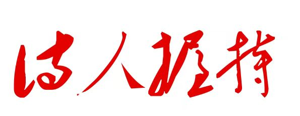

请输入文本请输入文本请输入文本请输入文本请输入文本请输入文本请输入文本请输入文本请输入文本
请输入文本请输入文本请输入文本请输入文本请输入文本请输入文本请输入文本请输入文本请输入文本请输入文本请输入文本请输入文本
请输入文本请输入文本请输入文本请输入文本请输入文本请输入文本请输入文本
《诗人握持》是一本请输入文本请输入文本请输入文本请输入文本请输入文本请输入文本请输入文本请输入文本请输入文本
请输入文本请输入文本请输入文本请输入文本请输入文本请输入文本。